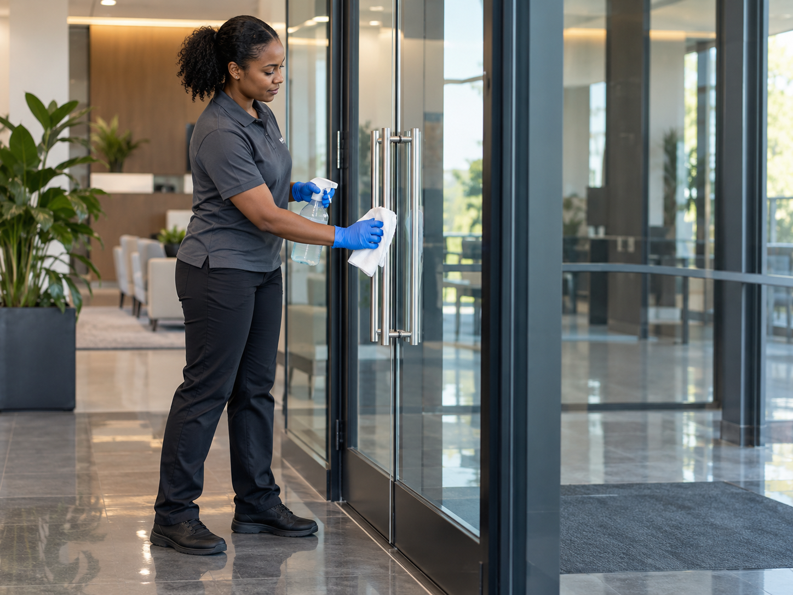
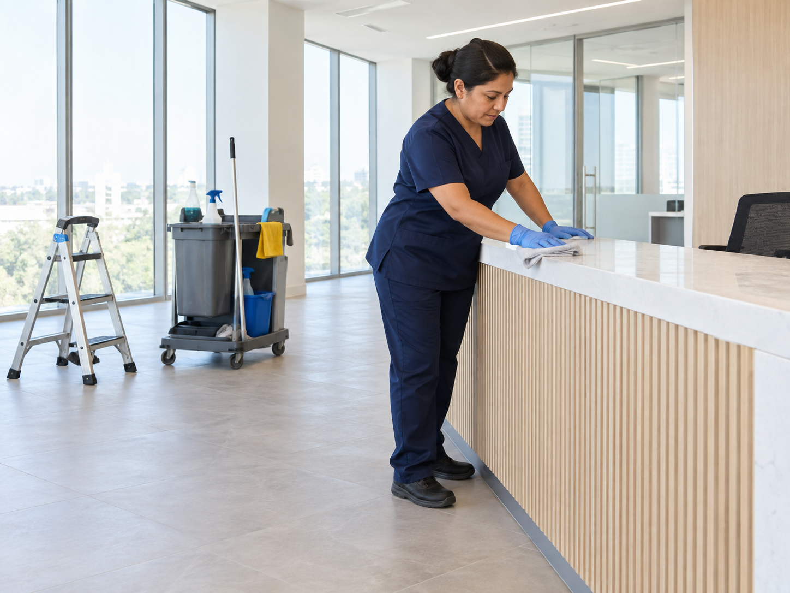
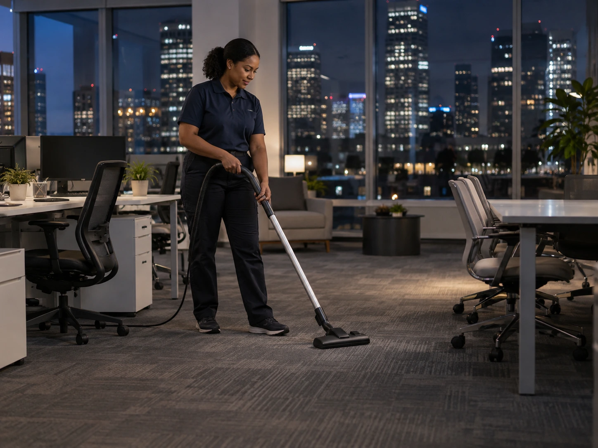
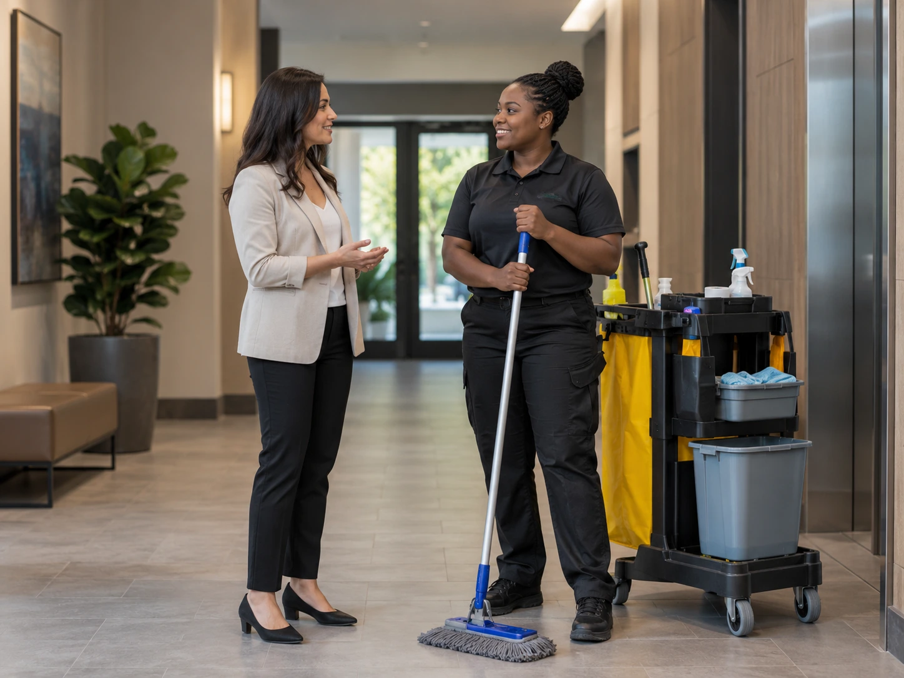
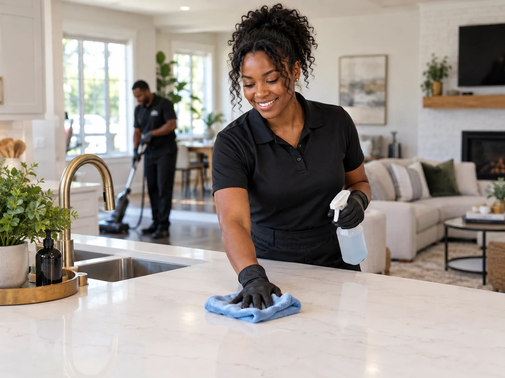

When Cleaning Gets Complicated
Long hours, renovations, shared spaces, mixed use buildings, and tight budgets can all change what the cleaning plan should look like.

I’m getting my house renovated, what should I expect?
Read MoreThe kitchen area in our office never stays clean because no one cleans up after themselves, how can everyone be held responsible?
Read MoreShould I have the kitchen staff clean the kitchen, or hire a cleaning service?
Read More
Is it best to have someone cleaning throughout the day? We’re really busy, but I don’t know if we can afford it.
Read More
We just finished construction and there is still dust everywhere, when is the building actually ready for employees or customers?
Read More
I manage an apartment building and tenants keep leaving things in the common areas. I don’t want my staff dealing with it, how should I handle this?
Read More
My business stays open late and opens early, how can I still get the space cleaned?
Read MoreWe have offices in the front and a warehouse in the back, and everyone works different hours. How do I handle the cleaning?
Read More
We’re moving into a new office, how often can I have it cleaned while still keeping it affordable?
Read More
I manage a building and some tenants are dirtier than others. I want to make sure the building always stays clean, how do I handle that?
Read More
I manage an apartment building, they just finished painting one of the apartments and I forgot to schedule the cleaning. The new tenant moves in soon, what should I do?
Read MoreMatch the cleaning plan to your property
Long hours, renovations, shared spaces, and changing schedules can all change what makes sense.